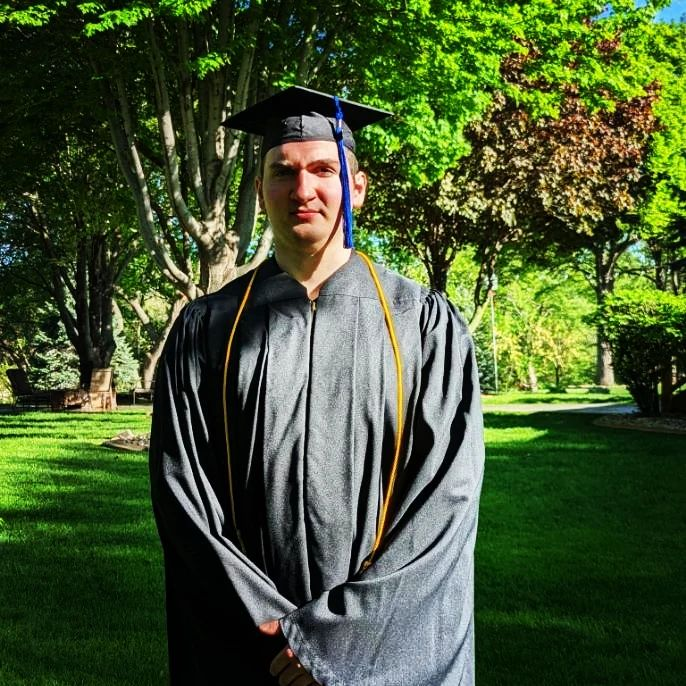
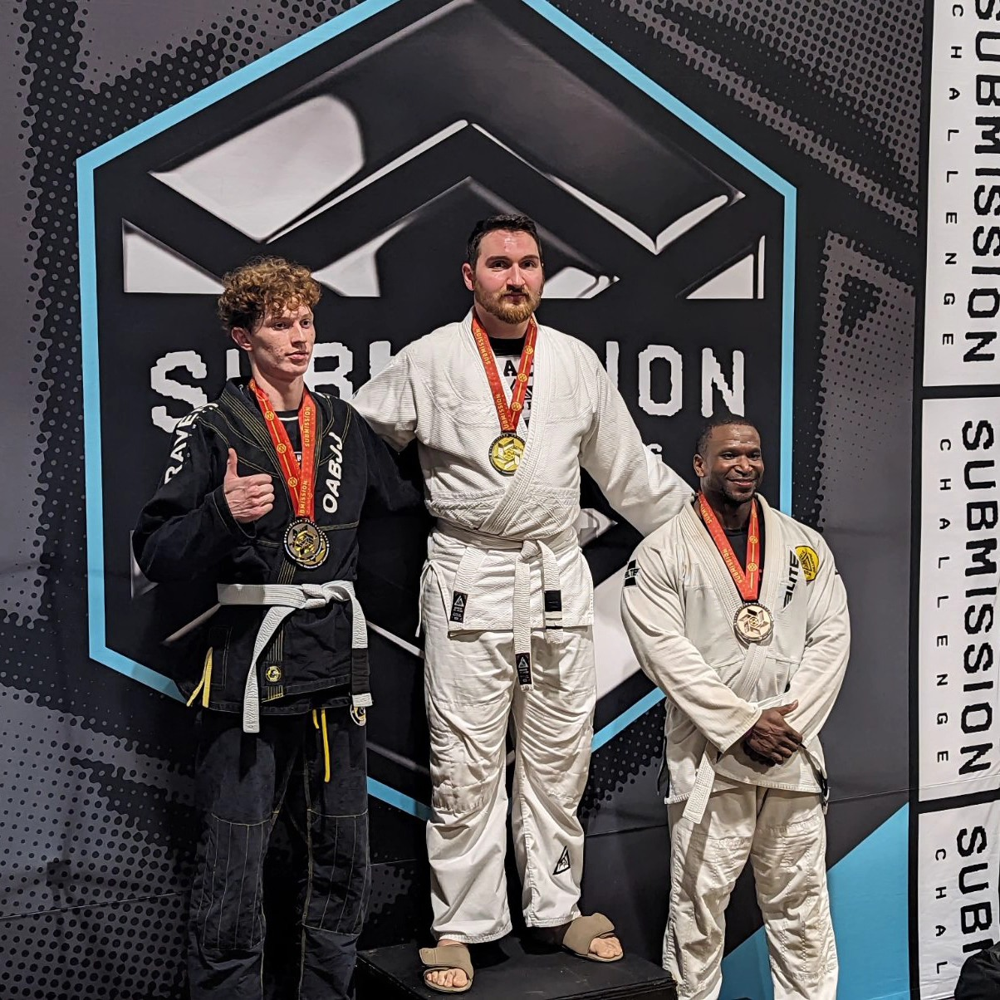
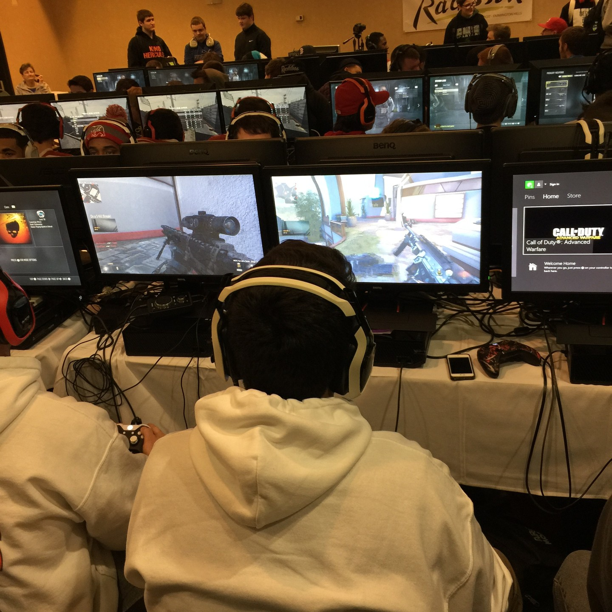

Accomplishment & Awards

Graduation
Joshua graduated from homeschool in May of 2024 and graduated from Iowa Western Community College in May of 2023 with a degree in Computer Science.

Jui Jitsu
Josh has competed in various tournaments for Krav Maga and Jiu-Jitsu, showcasing his dedication to martial arts and physical discipline. His hard work and commitment to improving his skills paid off, as he proudly earned both 1st and 2nd place titles in different competitions. These achievements reflect not only his technical ability but also his determination, resilience, and passion for the sport.

Gaming Tournaments
Joshua has competed in numerous video game tournaments around the country, demonstrating his skill, strategic thinking, and passion for gaming on a competitive level.